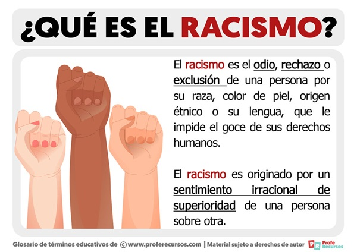
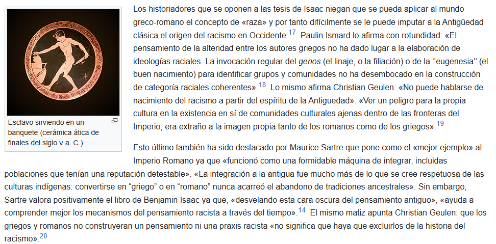

El RACISMO
El racismo es sostener la superioridad o inferioridad de un grupo étnico frente a los demás, promoviendo mecanismos, sistemas y culturas de discriminación, persecución y exclusión. La palabra «racismo» designa también la doctrina antropológica o la ideología política basada en ese sentimiento.1234 Conforme a la Convención Internacional sobre la Eliminación de todas las Formas de Discriminación Racial aprobada por la Asamblea General de la Organización de las Naciones Unidas el 21 de diciembre de 1965:
Existen autores que proponen distinguir entre el racismo en sentido amplio del racismo en sentido restringido. En el primer caso, se trataría de una actitud etnocéntrica o «sociocéntrica» que separa el grupo propio del ajeno y que considera que ambos están constituidos por esencias hereditarias e inmutables que hacen de los otros, de los ajenos, seres inadmisibles y amenazadores. Esta concepción de los demás conduciría a su segregación, discriminación, expulsión o exterminio y podría apoyarse en ideas científicas, religiosas o en meras leyendas o sentimientos tradicionales. Afirma también la superioridad intelectual y moral de unas razas sobre otras, superioridad que se mantiene con la pureza racial y se arruina con el mestizaje. Este tipo de racismo, cuyo modelo es el nazi y el racismo occidental en general, conduce a defender el derecho natural de las razas «superiores» a imponerse sobre las «inferiores».7 El racismo en sentido restringido es una doctrina de apariencia científica que afirma la determinación biológica hereditaria de las capacidades intelectuales y morales del individuo, y la división de los grupos humanos en razas, diferenciadas por caracteres físicos asociados a los intelectuales y morales, hereditarios e inmutables.
Las actitudes, valores y sistemas racistas establecen, abierta o veladamente, un orden jerárquico entre los grupos étnicos o raciales, utilizado para justificar los privilegios o ventajas de las que goza el grupo dominante.
Buraschi y Aguilar definen el racismo como «un sistema de dominación y de inferiorización de un grupo sobre otro basado en la racialización de las diferencias, en el que se articulan las dimensiones interpersonal, institucional y cultural. Se expresa a través de un conjunto de ideas, discursos y prácticas de invisibilización, estigmatización, discriminación, exclusión, explotación, agresión y despojo».8
Para combatir el racismo, la Organización de Naciones Unidas adoptó en 1965 la Convención internacional sobre la eliminación de todas las formas de discriminación racial y estableció el día 21 de marzo como Día Internacional de la Eliminación de la Discriminación Racial.
 Edad Media
El cristianismo aportó un nuevo concepto, el universalismo, hasta entonces ajeno a la Antigüedad al considerarse la verdadera religión de toda la humanidad. De esta forma la división entre griegos, romanos y «bárbaros», propia de la Antigüedad, fue sustituida por la diferenciación entre los que ya formaban parte de la comunidad cristiana, los bautizados, y «los todavía no cristianos» (los paganos).21 Un grupo especial lo constituían los judíos ya que eran la cuna de la religión cristiana y por tanto no eran perseguidos, pero solo «conllevados» que no tolerados como lo demostrarían los pogromos que sufrieron sobre todo a partir del siglo XIV. Las regiones desconocidas de la Tierra en el imaginario del Occidente medieval aparecían pobladas por seres fabulosos no destinados a la salvación. «En esta cosmovisión difícilmente puede percibirse una dimensión racista», ha afirmado Christian Geulen, quien añade que en cuanto a «los conflictos políticos medievales, apenas puede hablarse de motivos racistas reconocibles».2
or otro lado, en el islam medieval la maldición de Cam, convenientemente reelaborada, fue utilizada para justificar la esclavitud de los negros al señalarlos como los descendientes de Cam que, según el relato bíblico, se había mofado de su padre Noé cuando lo encontró borracho y desnudo y Noé furioso había maldecido al hijo de Cam, Canaan, a ser «para sus hermanos el esclavo de los esclavos». En la Biblia nada se decía del color de la piel de Cam (en realidad se trataba de justificar la esclavitud de los cananeos, los grandes enemigos de Israel), pero en el siglo III el padre de la Iglesia Orígenes añadió a la maldición el prejuicio de la piel al afirmar que los hijos de Cam estaban abocados a una vida degradante marcada por la oscuridad (en sentido espiritual) y asoció a los etíopes, descendientes del hijo maldito de Noé, a los negros. En la Alta Edad Media los etíopes serán considerados el espíritu del mal que se opone al del ángel. Sin embargo, será el gran erudito árabe Al-Tabari el que en el siglo X afirmó claramente que la maldición de Cam había acarreado el ennegrecimiento de su piel por lo que sus descendientes eran los negros que estaban condenados a la esclavitud.23